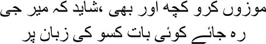
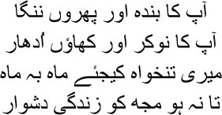
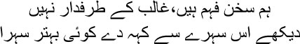
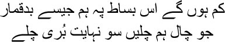
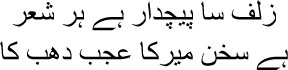

33

Compose some more poetry, Mir sahib
Your words may survive on someone’s lips
 am reminded of a Sufi tale, my brothers. A starving beggar was wandering from house to house in the city. Spotting him through their windows, people refused to open their doors to him. Eventually one door did open. The owner asked, ‘What … what is it … why do you keep banging on the door?’
am reminded of a Sufi tale, my brothers. A starving beggar was wandering from house to house in the city. Spotting him through their windows, people refused to open their doors to him. Eventually one door did open. The owner asked, ‘What … what is it … why do you keep banging on the door?’
— Some food, huzoor. I haven’t eaten in three days.
— So what can I do? No one’s home now.
— I don’t need anyone huzoor. Just some food. Nothing else.
Just like this beggar, I was wandering about from door to door. After I was released from jail, the lord arranged for my livelihood for some time. Mian Nasiruddin sahib drew me to his bosom. Everyone called him mian Kale Shah. Jahanpanah Bahadur Shah had accepted him as his teacher. So after my release, I moved into a part of mian Kale Shah’s house at Lal Kuan. I could not afford to pay him a rent; Kale sahib didn’t bring it up either. I was sitting with him in his drawing room when someone came up to me and said, ‘Congratulations, Mirza sahib.’
— For what?
— For your release from prison.
I was perpetually up to mischief, Manto bhai. Smiling at Kale sahib, I said, ‘Released? What do you mean, mian! At best you can say I’ve moved from the British jail to Kale sahib’s jail.’
Kale sahib, who had a sense of humour, burst into laughter. Then he said, ‘I have no idea why the emperor doesn’t call you to his court. If even a few drops of your sense of humour were to splash on him, his life would not be such an accursed one.’
— Why should Jahanpanah call me, mian sahib? I’m the lord’s dog.
— Mashallah! This is the Mirza Ghalib we know.
— Did I say something wrong?
— Haven’t you heard the story? Maula Darvish, the guide of the Naqshbandi order of the Sufis, used to call himself a dog.
— Tell me the story, janab. But let me send for Kallu first.
— Why?
— He cannot go to sleep without a story. Just like my addiction to alcohol, he’s addicted to stories.
— You have a very strange servant, Mirza.
I sent for Kallu. His eyes shone at the prospect of a new story; sitting down at Kale sahib’s feet, he began to massage them. I ought to have written a nazm about Kallu, Manto bhai; I never saw another person so addicted to stories.
Kale sahib started his story. —Maula Darvish was reciting the sayings of Maula Rumi to initiates at the dargah. You know what Maula Rumi said, don’t you? Man has to pass through three phases in his life. In the first, he worships something or the other—men, women, money, children, this world, a rock … anything. In the next, he reads the namaz for Allah. And in the last phase, what he says is neither ‘Allah is all I have’ nor ‘There’s no such thing as Allah’. Suddenly a mullah marched into the dargah, growling in rage. ‘You dog!’ he swore at the Maula. ‘While you chat with the initiates here, no one pays any attention to me when I try to turn them towards the lord.’
— And then? Kallu grew agitated. —He thrashed the mullah within an inch of life …?
— Patience, Kallu. Kale Shah laughed. Does a thrashing solve everything? Of course, the initiates did jump to their feet and were about to beat the mullah up.
— He should definitely have been beaten up. Kallu grew agitated again. If I’d been there, I’d have torn the mullah’s beard off and …
— Let mian tell the story, Kallu. If you’d been there we’d never have had the chance to listen to the story. And you would have wandered about the streets, pulling the mullah by his beard. I laughed.
— Maula managed to stop the initiates. Laughing, he told them, ‘What do you think you’re doing? What’s so bad about the word “dog”? I quite like the idea. Of course I’m a dog. I follow my master’s instructions. I bark when I see my master in danger; I wag my tail joyfully when he’s happy. Barking, wagging his tail, loving his master—this is the way of the dog. I see nothing insulting here.’ So Mirza, if you’re a dog of the lord, what could be more honourable?
That was mian Kale Shah for you. As interested in the finer things of life as he was compassionate. He used to talk to the emperor regularly about me. He wanted wholeheartedly that I should find a place in the royal court. ‘Always remember, Mirza, that the lord settles all accounts in this very world,’ he used to tell me. ‘On Judgement Day you only have to be with the lord. There are no gains to be made there. You will surely be rewarded for the beauty that you have created for the lord, Mirza.’
— The lord is the creator of all beauty, mian sahib. What can we possibly create for him?
— Why did he bring us into this world then, Mirza? He gives us truth, and we give him illusion.
Kale sahib was right. The ghazal is in fact an illusion. Do you know what’s hidden inside the word ‘ghazal’? A conversation with your lover. About love. Just as spring appears and then vanishes, so too does love arrive suddenly and depart the same way. Don’t you feel a chill when you think about it, Manto bhai? The seed of death sprouts within the desire for union. The body will decay, so will the heart, desire will approach its death. We only wander about briefly in the picture gallery of illusion. But never mind all these clichés. Man doesn’t survive on a diet of illusions. What I needed was bread and meat and wine.
At the age of fifty-two, I found a place in the royal court, the durbar. When I went to Shahjahanabad from Agra, the emperor’s court was the world of my dreams. Those dreams had died and rotted long ago, Manto bhai. I wanted nothing more as a poet, either. I knew that conversation had forsaken me too. I needed a place at the royal court only for my material needs. The court cannot bring the spring of creativity to an artist’s life. If only I had found a place at the durbar when I was still capable of writing, I would not have had to resort to dirty tricks to survive, I would have had the respite to make love more passionately with language.
Kale sahib stood by me, of course, and Ahsanullah Khan, the emperor’s doctor, also held out his hand in support. He was extremely fond of my Farsi compositions. Telling the emperor of my Farsi diwans and my Melody Quintet, he got me a job at the court. What else was it but a job? Look, you may be a poet, or you may be a brilliant writer in Farsi, but you must remember that you’re nothing but a servant of the court. To the emperor we were all eunuchs, Manto bhai. If not, could he have asked a composer of ghazals to write a history of the Mughal Empire? I would be paid six hundred rupees a year.
All humiliation is ceremonial. So I was given a title along with suitable garments for the royal court. Nazm-ud-Daulah, Davir-ul-Mulk, Nizam-Jang. Was this a title for a poet? But so the emperor desired. In other words, you’re not a poet anymore; you are the jewel of the kingdom, composer to the nation, and war hero. For heaven’s sake, was I capable of fighting in a war? How could someone who had been defeated in the war for survival possibly be a war hero? I had a big laugh when I went back home. Me, a historian? I had not read the stories about Sikandar and Dara; half my life had been spent on stories of love and death. But since Jahanpanah had so willed it, even I would have to become a historian. Six hundred rupees a year, after all. He could have turned me into a eunuch guarding his harem if he so wished.
Umrao Begum came to me that evening. Perhaps Kallu had told her I was laughing incessantly, like a braying ass. I had drunk more than usual that day. When I saw Umrao I said, laughing, ‘Why are you in my hell instead of your mosque, Begum?’
— It’s a happy day for you, Mirza sahib.
— But of course. I am a war hero.
I began to laugh again.
— What is it, Mirza sahib?
— You won’t understand, Begum.
— Do I not understand you at all?
— No, Begum. You do not understand me at all.
After a long, long time, I drew Umrao Begum to my breast. —I don’t have a dream anymore, Begum. Poetry has abandoned me. I can be a servant to anyone who will ask me to be one, so that I can earn a livelihood. I was not just Asadullah Khan, I was also Ghalib—these are two different individuals, Begum. Asadullah Khan likes his drink, enjoys his kebab and paratha; and Ghalib savours only words—words hung on rainbows. The emperor can buy Asadullah Khan, but he doesn’t have enough money in his treasury to purchase Ghalib. Go ahead, buy my compromise as you will.
— Mirza sahib …
— Yes.
— Give up the job then.
— No, Begum.
— Why not?
— There’s nothing coming in the way now, Begum. Once the ghazal has forsaken someone, he can do as he pleases. He can massage the emperor’s feet, he can play political games too. Why don’t you make some keema pulao tomorrow? I want a comfortable life now, Begum.
I could make out that the emperor did not like me at all. He had accepted me only for Kale sahib’s and Ahsanullah Khan’s sake. I didn’t enjoy the ways of the royal court either. I had to compose poems commemorating Eid to make the emperor happy; there were a hundred other celebrations—I had to write poems for each of them. I couldn’t do all this. I would simply recite a sher or two, without bothering to write them down. Could such stuff ever amount to poetry? Jahanpanah had to be paid a royalty during celebrations; I had to write something or the other to save money. It was shit and dung, Manto bhai, that I flung in Jahanpanah’s face; do you suppose the emperor was capable of understanding the artist’s devious ways, his haramigiri? All he wanted was flattery. The court poet Zauq sahib’s continuous sycophancy had convinced him to the core that all poetry in the world was actually in praise of Emperor Bahadur Shah Zafar. All rulers think this way. If you oppose this line of thought, you will be at the receiving end of abuse all your life. Think of all the praise Jahanpanah Akbar commanded in history. But how could he have Anarkali killed the way he did? Her real name was Nadia Begum. Some called her Sharafunnisa Begum. The ravishingly beautiful daughter of a slave in Akbar’s harem. One day in the Chamber of Mirrors, Emperor Akbar discovered Anarkali smiling at prince Salim. This smile was all it took for the seeds of Anarkali’s death to be sown. The living Anarkali disappeared into the depths of the palace walls. All … all empires gobble up human beings this way.
Empire and history consume everything, Manto bhai. On Jahanpanah’s orders, I began to write history. I planned a two-volume work on the Mughal Empire. The first would cover the period from Timur Lang to Humayun, and the second, from Akbar to Bahadur Shah. I titled the first volume Mihar-e-Nimroz—The Midday Sun. And the second, Mah-e-Nimmah—The Midmonth Moon. The two volumes together would be titled Partabisthan—The Kingdom of Light.
Since it was a matter of my livelihood, I began to write quickly. I was supposed to be paid every six months. In the first six months, I completed the history of Emperor Babar’s life. But how could I accept payment only once in six months for such tedious work? I composed a poem requesting monthly payments and sent it to the emperor.

Your slave and a pauper?
Your servant and always in debt?
Let my salary be paid every month
Let my life not be full of hardships
I was unable to complete the history, my brothers. Only the first volume, The Midday Sun, was published. I couldn’t proceed with the work on The Midmonth Moon. I told hakim Ahsanullah Khan sahib that someone like me couldn’t go scouring in the jungle of history for accurate information; all I can do is write poetry by the light of the heart, hakim sahib; so it would be helpful if the facts that needed to be included in the history could be selected and sent to me. Do you know what he did? He wrote down all kinds of facts, starting with the birth of Adam and going on to Chenghez Khan, and sent them to me. But I had begun the history of the empire with Timur Lang. What was I to do? I prefixed all that I had written with this new material. But no information arrived for the second volume. I had written about sixty-four pages. I sent word several times, asking for more information. Once, the response was, ‘It’s Ramzan’. The next time I was told, ‘Everyone’s busy celebrating Eid.’ Damn it! Why was I obliged to write a history of the empire of the badshahs? I sent off the sixty-four pages I had written. I wonder in which dark cell of the fort the termites got at it. History is for termites to destroy, isn’t that so, Manto bhai?
Just as history is written on the whims of rulers, erasing it is also their proud prerogative. How can we keep pace? And as for the poet, all he wants is to fix a pair of iridescent butterfly wings to the body of history—let it fly, let it fly where it will, to heaven or to hell, to jannat or to jahannum, as it pleases. I have already told you that Emperor Bahadur Shah didn’t care for my ghazals. When Zauq sahib recited his shers, he would exclaim, ‘Hai hai!’ and ‘Kyabaat kyabaat!’ But when it came to my shers, all he would say was, ‘All right.’ Once, he told me, ‘You read very well, Mirza sahib.’ You understand the implication? That the meaning of the ghazal amounts to nothing at all. Now he had poetic ambitions too. Earlier, Zauq sahib used to polish Jahanpanah’s ghazals; after his death it was my turn. What did our emperor compose? What was he capable of composing? A coward like him—who had no mission besides living off his ancestral wealth, who was a puppet in the hands of Begum Zeenat Mahal, and a parasite all his life—was supposed to write ghazals? Conversations with lovers need plenty of stamina, Manto bhai.
Something happened at the wedding of the emperor’s youngest son Mirza Jawan Bakht. Being Begum Zeenat Mahal’s son, he was the probable successor to the throne. The wedding would be conducted with great pomp and ceremony. On the Begum’s instructions, I had to compose a sehra—a wedding song. At the end of the sehra I wrote:

I’d like to see someone, unbiased about Ghalib,
A connoisseur of poetry, write a better wedding song
The emperor assumed this was an insult to him and to his ustad, Ibrahim Zauq. What did this imply? That Zauq sahib, on whom he had bestowed the title of King of Poets, Malik-us-Shuara, was neither a connoisseur of poetry, nor capable of writing such verse. When I sought permission to leave, the emperor said, ‘Just a minute, Mirza. Let the ustad arrive.’
— As you please, Jahanpanah.
Suddenly the emperor began to recite:

There cannot be as many bad players at this board as I
Any move I make is a terrible one
Looking at me, he asked, ‘Do you know whose sher this is?’
— No, janab.
— It’s ustadji’s. You reminded me of it.
Zauq sahib arrived in court. The emperor was exhilarated.
— Come, ustadji. Read the wedding song that Mirza sahib has composed.
When he had read it, Zauq sahib glanced at me. His eyes held undisguised loathing for me. As though he was looking at a worm.
‘You must write one too, ustadji,’ said the emperor.
— Very well. He began writing his sehra. The last two lines were:

Let them learn, those who claim to be poets,
That this is how poets compose wedding songs
— Wonderful! Wonderful! The emperor exploded in joy. Do you know what happened after this? Zauq sahib’s wedding song rang out in the lanes and bylanes of Dilli that evening.
This was the emperor’s method for humiliating me. When he went off to fly kites, he would take me along. Do you know why? To humiliate me, to humiliate me as deeply as possible. Since I pay you every month, it doesn’t matter whether you’re Mirza Ghalib or someone else—you’re nothing but a eunuch in my harem. He would invite me to mushairas and keep me waiting, I would be called upon to read either at the end or in the middle.
To tell you the truth, Manto bhai, I did not want to hurt anyone with the last two lines of my sehra. Still I had to send a poem of apology to the emperor. What else could I have done? The poet was worse than a beggar in the eyes of society. Do you know why most people didn’t like me? No matter how good or bad the poetry was at the mushairas, everyone would exclaim ‘Brilliant! Wonderful!’ But not me. I was unable to praise anyone until I had understood the essence of their verse. People would be furious with me. But how could I praise something unless the purity of the Goddess Saraswati was expressed in it? When I liked a ghazal, though, my praise was unstinting. Once, Munshi Ghulam Ali Khan recited a sher over a game of chess. Oh, what a sher it was! It pierced my heart like an arrow. ‘Whose sher is this, Munshiji?’ I asked.
— Zauq sahib’s.
— Tell me again.
I would ask Munshiji to recite this sher over and over again. Zauq sahib had written—Exhausted, we seek shelter at the hands of death, but what if death does not bring peace either? I didn’t enjoy mushairas. Poetry is born in solitude—just as the best pearls in the world are born in the deepest depths of the ocean.
As Mir sahib wrote:

Each of my poems is like a coil of her hair
Mir’s poetry is extraordinary by nature